专题02 线段上的动点问题的四种模型

目录
题型一：线段上含动点求线段长问题 1
题型二：线段上含动点求定值问题 7
题型三：线段上含动点求时间问题 15
题型四：线段上含动点的新定义型问题 21

题型一：线段上含动点求线段长问题
1．如图， ，C为线段
，C为线段 上一动点，点D在线段
上一动点，点D在线段 上且满足
上且满足 ．
．

(1)当C为线段的中点时，求 的长．
的长．
(2)若E为线段 的中点，当
的中点，当
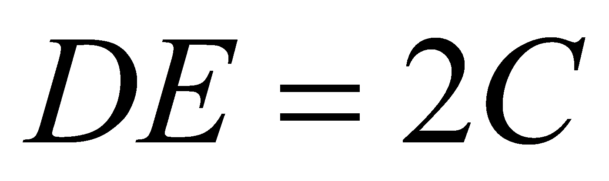
E时，求 的长．
的长．2．已知线段 ，点
，点 是线段
是线段 延长线上一个动点，
延长线上一个动点， 是线段
是线段 的中点．
的中点．

(1)如图，若 ，求线段的长；
，求线段的长；
(2)若的长逐渐增大，则的长的变化趋势是____________；
①变小；②变大；③先变大，后变小；④先变小，后变大．
(3)若 ，画出所有符合条件的图形并求线段的长．
，画出所有符合条件的图形并求线段的长．
3．已知， ，点C为射线上一个动点，点E，F分别是
，点C为射线上一个动点，点E，F分别是 的中点．
的中点．

(1)如图，若点C在线段上，且 ，求
，求 的长度；
的长度；
(2)若点C在线段的延长线上，求 的长度．
的长度．
4．按下列要求完成回图和计算：

(1)已知线段a和b，求作线段 ，使
，使 （要求：尺规作图，保留作图痕迹，不写作法）；
（要求：尺规作图，保留作图痕迹，不写作法）；
(2)已知线段 ，点C为上的一个动点，点D、E分别是和的中点．
，点C为上的一个动点，点D、E分别是和的中点．
若：①点C恰好是中点，则 ___________
___________ ，
，
②，求 的长．
的长．
5．如图，直线 上有两点，点
上有两点，点 是线段上的一点，
是线段上的一点， ．
．

(1)若 ，则
，则
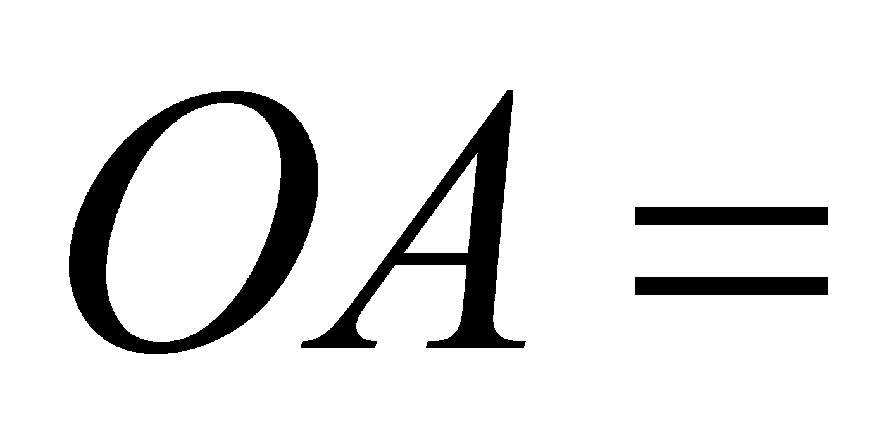
___________， ___________．
___________．(2)在（1）的条件下，若动点 ，
， 分别从
分别从 ，
， 同时出发，向右运动，点的速度为
同时出发，向右运动，点的速度为 ，点的速度为
，点的速度为 ．设运动时间为
．设运动时间为
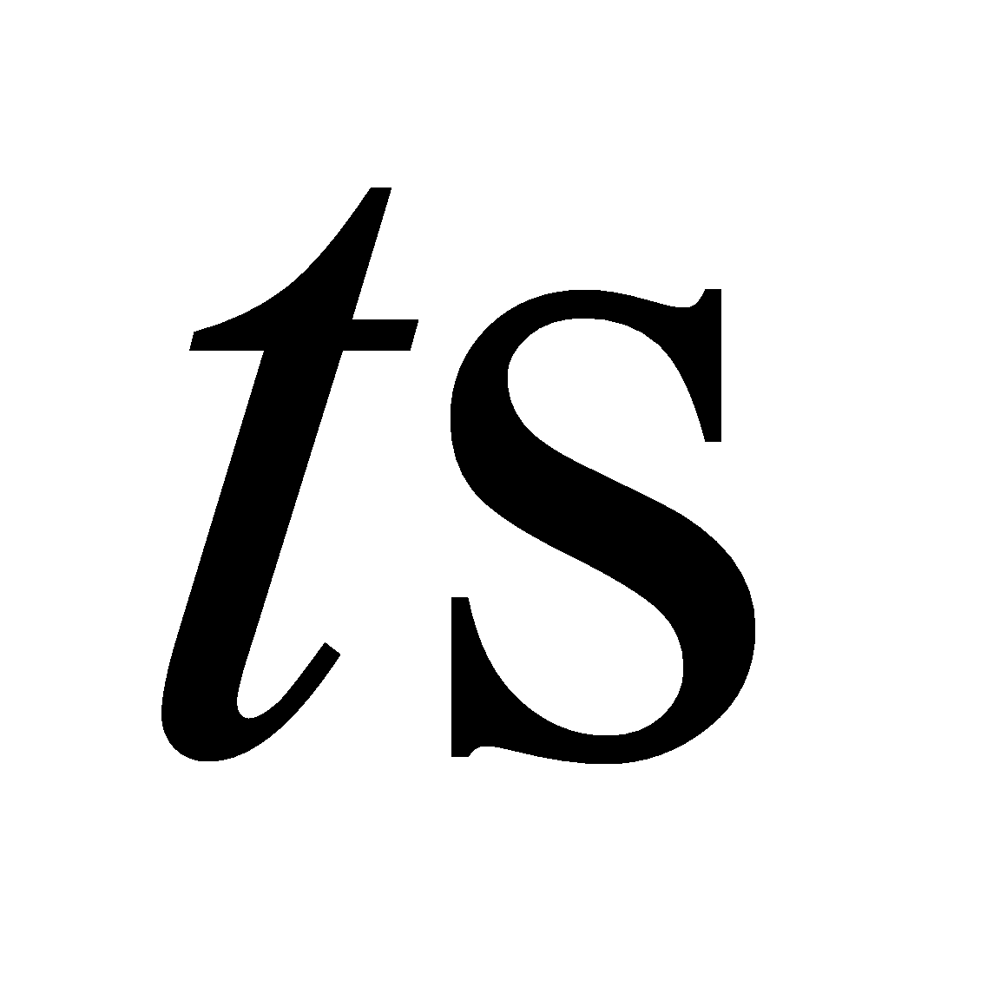
，当点与点重合时，、两点停止运动．当 为何值时，
为何值时，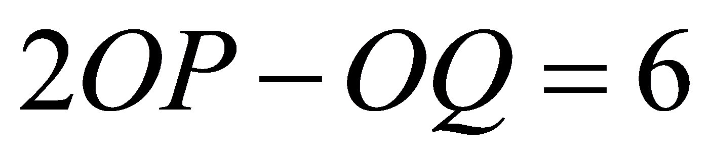
．(3)为直线上一点，且满足 ，直接写出
，直接写出
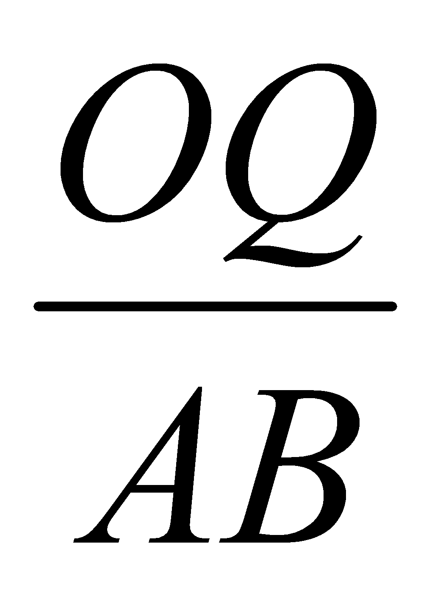
的值___________．题型二：线段上含动点求定值问题
6．应用题：如图，已知线段 ，点为线段上的一个动点，点、
，点为线段上的一个动点，点、 分别是和的中点．
分别是和的中点．

(1)若 ，求的长；
，求的长；
(2)若为的中点，则与的数量关系是______；
(3)试着说明，不论点在线段上如何运动，只要不与点和重合，那么的长不变．
7．如图，已知数轴上点表示的数为 ，点表示的数为
，点表示的数为 ，满足
，满足 ．动点从点出发以每秒4个单位长度的速度沿数轴向左匀速运动，设运动时间为秒．
．动点从点出发以每秒4个单位长度的速度沿数轴向左匀速运动，设运动时间为秒．
(1)数轴上点表示的数是_______，点表示的数是_______；
(2)若点从点出发向左运动，点为 的中点，在点到达点之前，求证：
的中点，在点到达点之前，求证： 为定值．
为定值．
8．如图，M是线段上一动点，沿
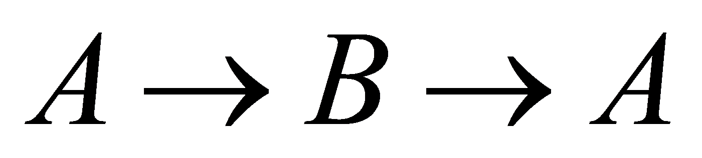
以 的速度往返运动1次，N是线段
的速度往返运动1次，N是线段 的中点，
的中点， ，设点M运动时间为t秒
，设点M运动时间为t秒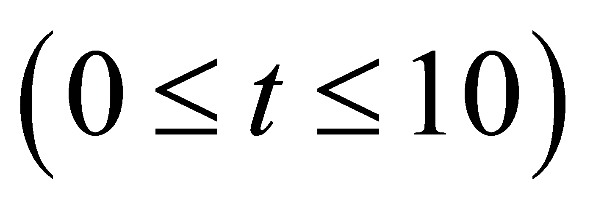
．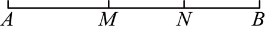
(1)当 时，①
时，① ______，②此时线段
______，②此时线段 的长度
的长度 ______；
______；
(2)用含有t的代数式表示运动过程中 的长；
的长；
(3)在运动过程中，若中点为C，则 的长度是否变化？若不变，求出的长；若变化，请说明理由．
的长度是否变化？若不变，求出的长；若变化，请说明理由．
9．如图，已知数轴上点A表示的数为4，点B表示的数为1，C是数轴上一点，且 ．动点P从点B出发，以每秒6个单位长度的速度沿数轴向左匀速运动．设运动时间为
．动点P从点B出发，以每秒6个单位长度的速度沿数轴向左匀速运动．设运动时间为 秒．
秒．

(1)直接写出数轴上点C表示的数；
(2)当点C在数轴的负半轴上时，用含t的代数式表示线段 的长度；
的长度；
(3)当点C在数轴的负半轴上时，设M是 的中点，N是的中点，点P在运动过程中，线段
的中点，N是的中点，点P在运动过程中，线段 是否发生变化?若有变化，请说明理由；若不变，请求出的长度．
是否发生变化?若有变化，请说明理由；若不变，请求出的长度．
10．，两点在数轴上的位置如图所示，其中点对应的有理数为 ，且
，且 ．动点从点出发，以每秒
．动点从点出发，以每秒 个单位长度的速度沿数轴正方向运动，设运动时间为秒（
个单位长度的速度沿数轴正方向运动，设运动时间为秒（ ）．
）．

(1)直接写出当 时，的长是______，此时点在数轴上对应的有理数是______；
时，的长是______，此时点在数轴上对应的有理数是______；
(2)请用含的代数式表示线段的长为______，此时数轴上点所对应的数表示为______；
(3)在（ ）的条件下，点
）的条件下，点 是线段的中点，点
是线段的中点，点 是线段
是线段 的中点，求此时线段
的中点，求此时线段 的长度．
的长度．
(4)为线段的中点，为线段 的中点．在点从点出发沿数轴正方向运动的过程中，线段的长度是否发生变化？若变化，请说明理由，若不变求出线段的长度．
的中点．在点从点出发沿数轴正方向运动的过程中，线段的长度是否发生变化？若变化，请说明理由，若不变求出线段的长度．
11．如图线段 ，动点从出发，以2个单位长度／秒的速度沿射线运动，为中点．
，动点从出发，以2个单位长度／秒的速度沿射线运动，为中点．
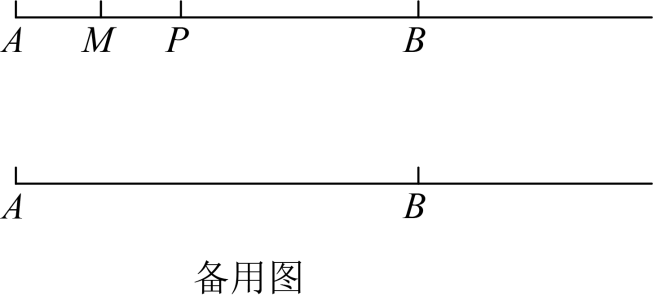
(1)当点在线段上运动时，
①出发多少秒后， ？
？
②试说明 为定值；
为定值；
(2)当点在线段延长线上运动时，设为的中点，有下列两个结论：
①长度不变；
② 的值不变．
的值不变．
选出一个正确的结论，并求其值；
12．综合与实践
已知数轴上A、B两点所表示的数分别为 和9．
和9．

(1)观察发现：
直接写出线段 __________．
__________．
(2)情境探究：
情境①：当点P为线段的中点时，且M为 的中点，N为的中点，请你借助直尺在图1中画出相应的图形，并写出线段
的中点，N为的中点，请你借助直尺在图1中画出相应的图形，并写出线段 __________；
__________；
情境②：当点P为线段AB上的一个动点时，如图2，且M为的中点，N为的中点，试通过计算判断的长度是否发生变化？
(3)迁移类比：
当点P为数轴上点A左侧的一个动点时，如图3，且M为的中点，N为的中点，直接写出线段的长．
题型三：线段上含动点求时间问题
13．如图，在数轴上，点A，B表示的数分别为 ，2，点P，Q从点A同时出发，沿数轴匀速向点B运动，点P的速度是每秒3个单位长度，点Q的速度是每秒2个单位长度．
，2，点P，Q从点A同时出发，沿数轴匀速向点B运动，点P的速度是每秒3个单位长度，点Q的速度是每秒2个单位长度．
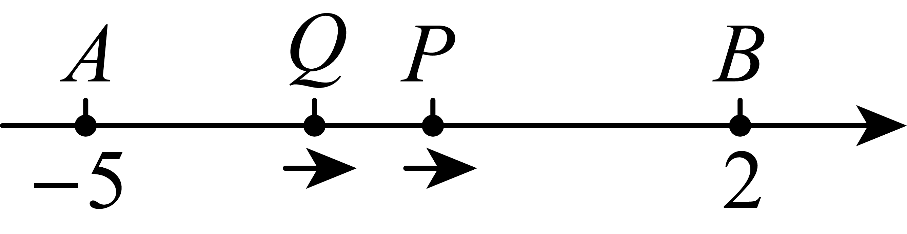
(1)计算点A，B表示的数之和；
(2)设运动时间为，当点P是 的中点时，求t的值．
的中点时，求t的值．
14．，两点在数轴上的位置如图所示，其中点对应的有理数为 ，点对应的有理数为
，点对应的有理数为 ．动点从点出发，以每秒
．动点从点出发，以每秒 个单位长度的速度沿数轴正方向运动，设运动时间为秒（）．
个单位长度的速度沿数轴正方向运动，设运动时间为秒（）．

(1)若点为的中点，则点对应的有理数为_________；
(2)当 时，的长为_________，点表示的有理数为_________；
时，的长为_________，点表示的有理数为_________；
(3)当 时，求的值．
时，求的值．
15．如图，点 A，C 是数轴上的点，点 A 在原点，AC＝8．动点 P，Q 分别从 A，C 出发沿数轴正方向运动，速度分别为每秒 3 个单位长度和每秒 1 个单位长度．

设运动时间为t秒（t＞0），解答下列问题：
（1）点C表示的数是 ；点P表示的数是 ，点Q表示的数是 ．（点P，点 Q 表示的数用含 t 的式子表示）
（2）若点 M 是 AP 的中点，点 N 是 CQ 的中点，求 MN 的长．
（3）直接写出 t 为何值时，点P与点Q相距4个单位长度．
16．如图①，已知点C在线段 上，线段
上，线段 厘米，
厘米， 厘米，点M，N分别是
厘米，点M，N分别是 ，
， 的中点．
的中点．

(1)求线段的长度；
(2)根据第（1）题的计算过程和结果，设 ，其他条件不变，求的长度；
，其他条件不变，求的长度；
(3)动点P、Q分别从A、B同时出发，点P以2厘米/秒的速度沿向右运动，终点为B，点Q以1厘米/秒的速度沿 向左运动，终点为A，当一个点到达终点，另一个点也随之停止运动，求运动多少秒时：
向左运动，终点为A，当一个点到达终点，另一个点也随之停止运动，求运动多少秒时：
①点P恰好为线段 的中点？
的中点？
②直接写出C、P、Q三点中有一点恰好是以另两点为端点的线段的中点？（除①外）
17．如图，数轴上点A表示的数为，点B表示的数为7，动点C从点A出发，以每秒2个单位长度的速度沿数轴向右匀速运动，同时动点D从点B出发，以每秒1个单位长度的速度向左匀速运动．设点C运动时间为t秒 ．
．
(1)① 两点之间的距离为_______，线段的中点表示的数为_______．
两点之间的距离为_______，线段的中点表示的数为_______．
②用含t的代数式表示：t秒后，点C表示的数为_______，点D表示的数为_________．
(2)当 时，描述C、D 两点的位置关系．
时，描述C、D 两点的位置关系．
(3)点C运动4秒后，动点E从点B出发，以每秒5个单位长度的速度向右匀速运动，试探索： 的值是否随着时间t的变化而变化？请说明理由．
的值是否随着时间t的变化而变化？请说明理由．
18． A，B 两点在数轴上的位置如图所示，其中点 A 对应的有理数为，且．动点 P 从点 A 出发，以每秒2个单位长度的速度沿数轴正方向运动，设运动时间为t秒（t
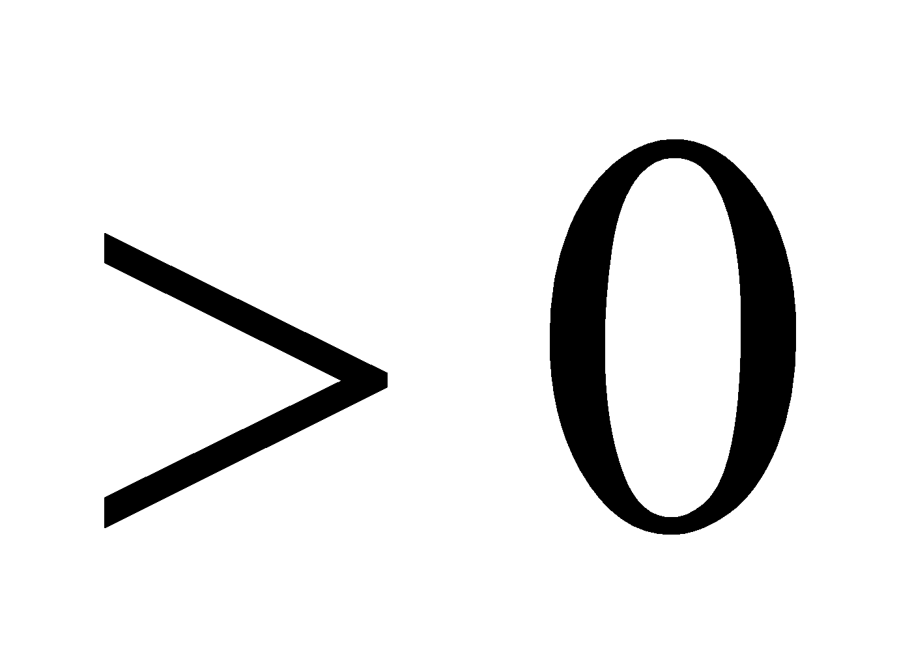
）．
(1)当时，的长为 ，点 P 表示的有理数为 ；
(2)当 时，求的值；
时，求的值；
(3) M为线段的中点，N 为线段 的中点．在点 P 运动的过程中，线段的长度是否发生变化？若变化，请说明理由；若不变，请你画出图象，并求出线段的长．
题型四：线段上含动点的新定义型问题
19．对于线段，点P是线段所在直线上任意一点，将 的值定义为点P关于线段的理想值，记作
的值定义为点P关于线段的理想值，记作
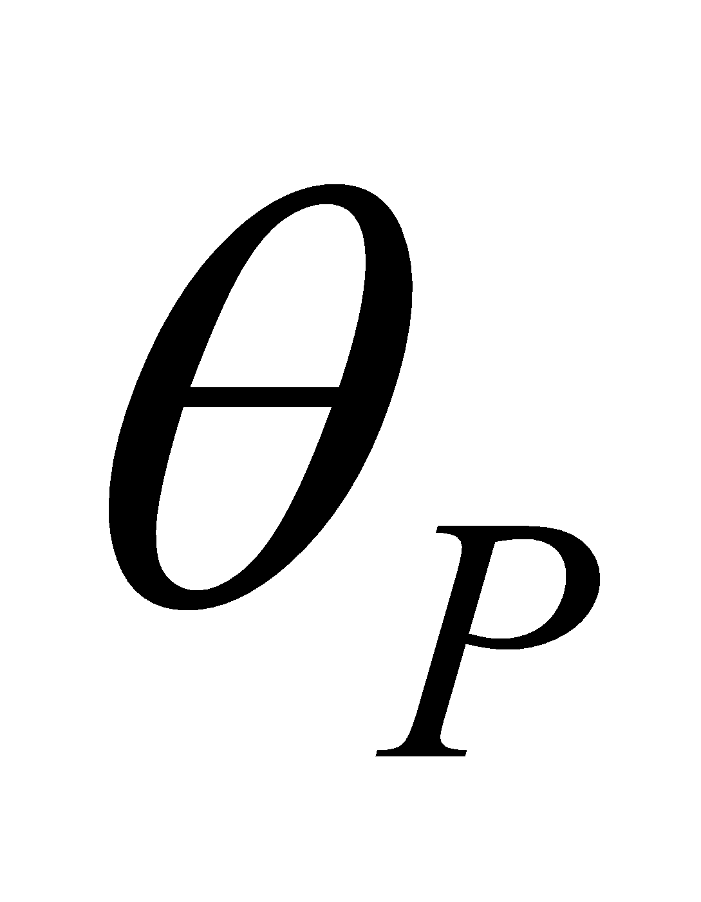
，即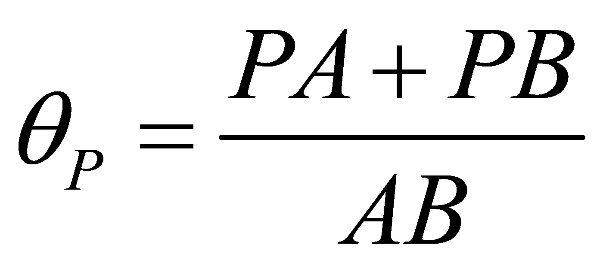
．(1)若点G在线段上，则点G关于线段的理想值 _______．
_______．
(2)若点H在射线上， ，点H关于线段的理想值
，点H关于线段的理想值
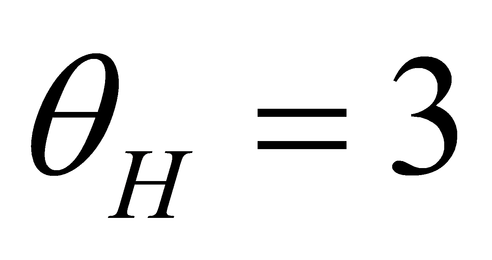
，求线段 的长．
的长．(3)数轴上的三个点M，N，Q，点M、N、Q在数轴上分别表示有理数m、n、t，且m、n满足 ，点Q关于线段的理想值
，点Q关于线段的理想值
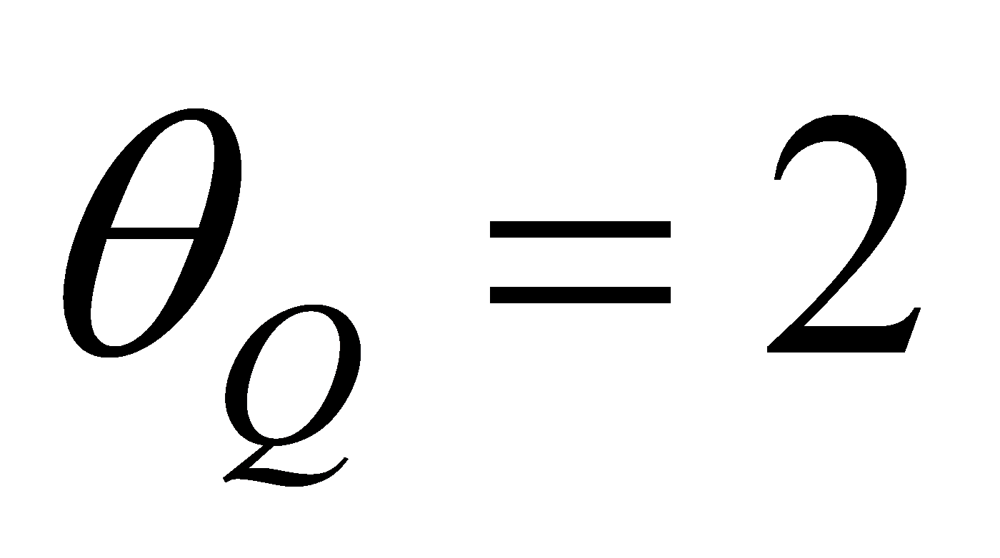
，求的值．20．定义：在同一直线上有 三点，若点到两点的距离呈2倍关系，即
三点，若点到两点的距离呈2倍关系，即 或
或 ，则称点是线段的“倍距点”．
，则称点是线段的“倍距点”．
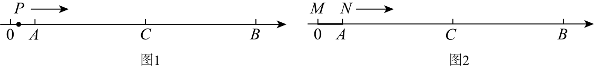
(1)线段的中点 该线段的“倍距点”；（填“是”或者“不是”）
(2)已知 ，点是线段的“倍距点”，直接写出
，点是线段的“倍距点”，直接写出 ．
．
(3)如图1，在数轴上，点表示的数为2，点表示的数为20，点为线段中点．
①现有一动点从原点O出发，以每秒2个单位的速度沿数轴向右匀速运动．设运动时间为秒 ，求当为何值时，点为的“倍距点”？
，求当为何值时，点为的“倍距点”？
②现有一长度为2的线段（如图2，点起始位置在原点），从原点O出发，以每秒1个单位的速度沿数轴向右匀速运动．当点为的“倍距点”时，请直接写出的值．
21．在数轴上，把原点记作点O，表示数a的点记作点A．对于数轴上任意一点P（不与点O、点A重合），将线段 与线段的长度之比定义为点P关于点A的K值，记作
与线段的长度之比定义为点P关于点A的K值，记作 ，即
，即
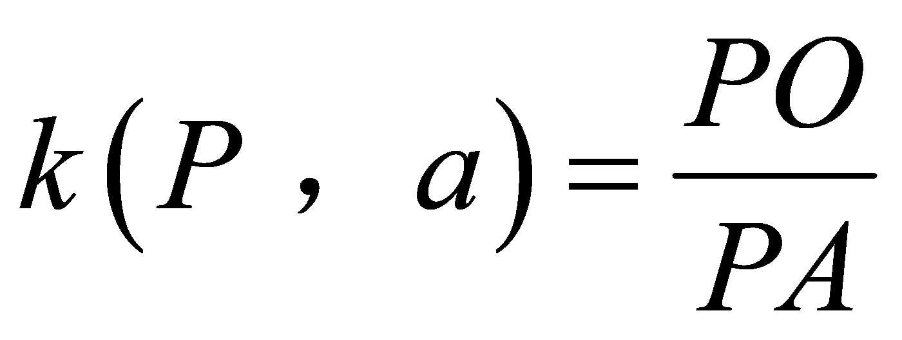
，例如：点P表示的数为1，点A表示的数为3，因为 ，
， ，所以
，所以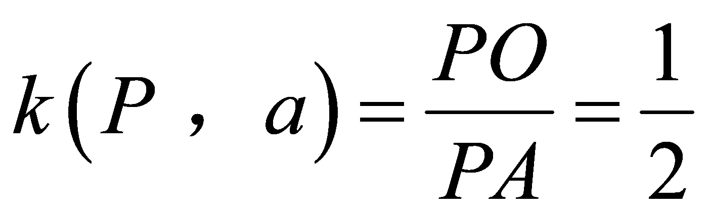
(1)当点P是线段 的中点时，点P关于点A的K值
的中点时，点P关于点A的K值 ；
；
(2)若点P表示的数为p，点A表示的数为a， ，求点P关于点A的K值；
，求点P关于点A的K值；
(3)点 、点
、点 为数轴上两个不同的点，并且点与所表示的数互为相反数，点表示的数为p，点A．点B分别表示数a、
为数轴上两个不同的点，并且点与所表示的数互为相反数，点表示的数为p，点A．点B分别表示数a、 ，若
，若
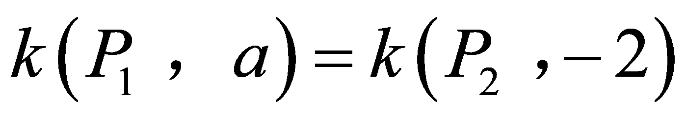
，请直接写出a、p需满足条件： ．22．定义：数轴上的三个点，如果其中一个点与近点距离是它与远点距离的 ，则称该点是其他两个点的“倍分点”．例如数轴上点
，则称该点是其他两个点的“倍分点”．例如数轴上点 所表示的数分别为
所表示的数分别为 、0、2，且满足
、0、2，且满足 ，则点是点
，则点是点 的“倍分点”．已知多项式
的“倍分点”．已知多项式
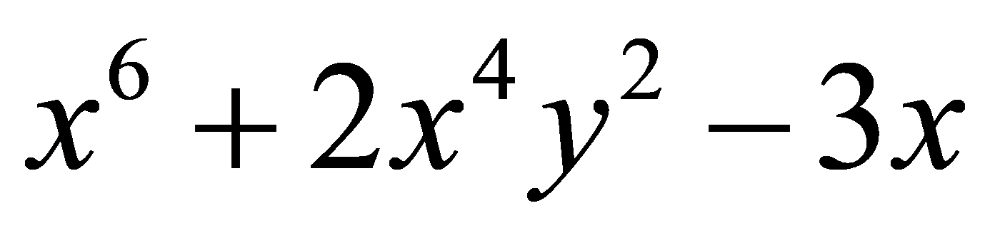
的一次项系数是 ，次数是
，次数是 ．若
．若 两数在数轴上所对应的点为
两数在数轴上所对应的点为 ．
．
(1)点与点之间的长度是=_____________．
(2)①在三个点中，点_____________是点的“倍分点”；
②若数轴上点是点
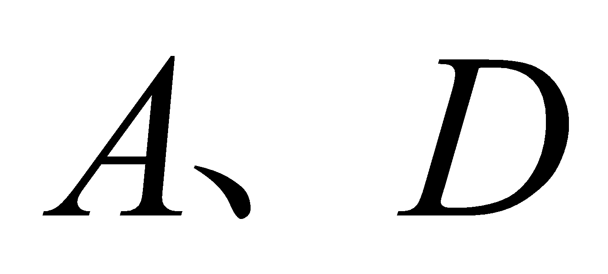
的“倍分点”，则点在数轴上对应的数有_____________个．(3)若数轴上点是点 的“倍分点”，求点在数轴上表示的数．
的“倍分点”，求点在数轴上表示的数．
23．定义：若点，，在同一直线上，且
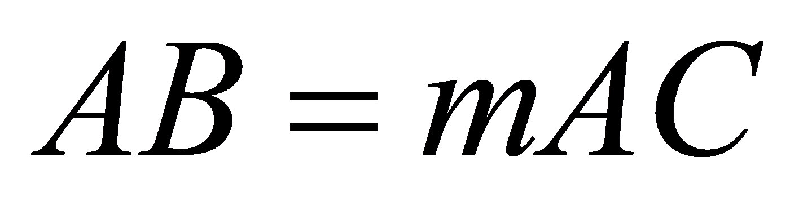
，则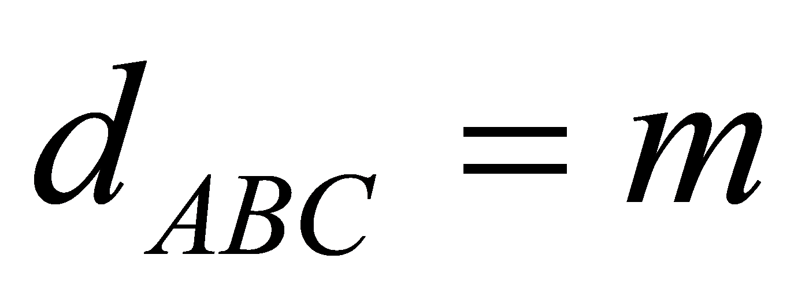
．例如 ，
， ，则
，则 ．
．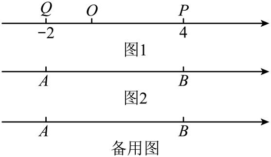
(1)如图1，为数轴的原点，点，表示的数分别为和，则
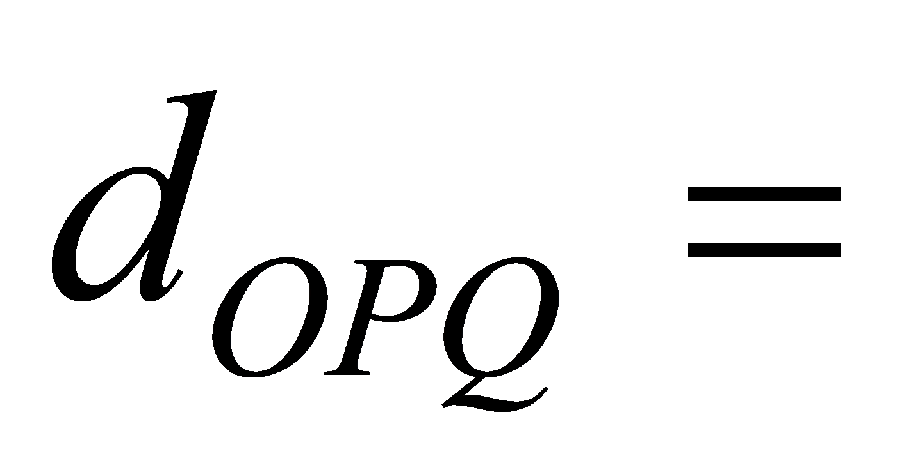
_______．(2)如图2，已知线段，点从点出发向右运动，点从点出发向左运动，若点运动速度为，点的运动速度为．设运动时间为．
①请用含有的代数式分别表示 和
和
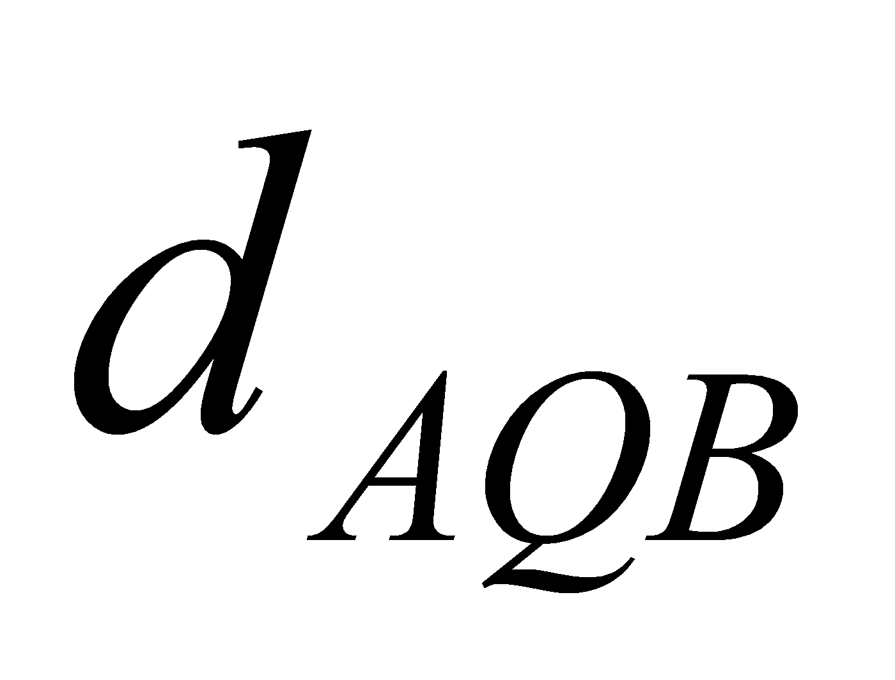
．②当为何值时， ．
．
③若线段 的中点为，直接写出
的中点为，直接写出
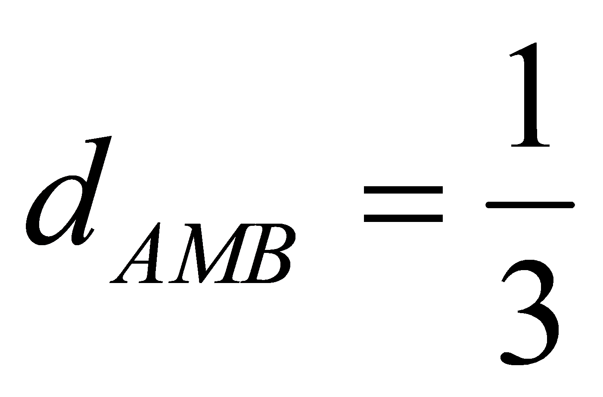
时的值．